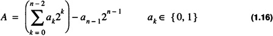

by Alan Parker
CRC Press, CRC Press LLC
ISBN: 0849371716 Pub Date: 08/01/93
|
|
Algorithms and Data Structures in C++
by Alan Parker CRC Press, CRC Press LLC ISBN: 0849371716 Pub Date: 08/01/93 |
| Previous | Table of Contents | Next |
Unsigned notation is used to represent nonnegative integers. The unsigned notation does not support negative numbers or floating point numbers. An n-bit number, A, in unsigned notation is represented as
with a value of
Negative numbers are not representable in unsigned format. The range of numbers in an n-bit unsigned notation is
Zero is uniquely represented in unsigned notation. The following types are used in the C++ programming language to indicate unsigned notation:
The number of bits for each type can be compiler dependent.
Signed-magnitude numbers are used to represent positive and negative integers. Signed-magnitude notation does not support floating-point numbers. An n-bit number, A, in signed-magnitude notation is represented as
with a value of
A number, A, is negative if and only if an - 1 = 1. The range of numbers in an n-bit signed magnitude notation is
The range is symmetrical and zero is not uniquely represented. Computers do not use signed-magnitude notation for integers because of the hardware complexity induced by the representation to support addition.
2’s complement notation is used by almost all computers to represent positive and negative integers. An n-bit number, A, in 2’s complement notation is represented as
with a value of

A number, A, is negative if and only if an - 1 = 1. From Eq. 1.16, the negative of A, -A, is given as
which can be written as
where is defined as the unary complement:
The one’s complement of a number, A, denoted by , is defined as

From Eq. 1.18 it can be shown that

To see this note that
and

This yields
Inserting Eq. 1.24 into Eq. 1.22 yields
which gives
By noting
one obtains
which is -A. So whether A is positive or negative the two’s complement of A is equivalent to -A.
Note that in this case it is a simpler way to generate the representation of -1. Otherwise you would have to note that
Similarly
However, it is useful to know the representation in terms of the weighted bits. For instance, -5, can be generated from the representation of -1 by eliminating the contribution of 4 in -1:
Similarly, -21, can be realized from -5 by eliminating the positive contribution of 16 from its representation.
The operations can be done in hex as well as binary. For 8-bit 2’s complement one has
with all the operations performed in hex. After a little familiarity, hex numbers are generally easier to manipulate. To take the one’s complement one handles each hex digit at a time. If w is a hex digit then the 1’s complement of w, , is given as
The range of numbers in an n-bit 2’s complement notation is
The range is not symmetric but the number zero is uniquely represented.
The representation in 2’s complement arithmetic is similar to an odometer in a car. If the car odometer is reading zero and the car is driven one mile in reverse (-1) then the odometer reads 999999. This is illustrated in Table 1.2.
| 8-Bit 2’s Complement | ||
|---|---|---|
| Binary | Value | Odometer |
| 11111110 | -2 | 999998 |
| 11111111 | -1 | 999999 |
| 00000000 | 0 | 000000 |
| 00000001 | 1 | 000001 |
| 00000010 | 2 | 000002 |
Typically, 2’s complement representations are used in the C++ programming language with the following declarations:
The number of bits for each type can be compiler dependent. An 8-bit example of the three basic integer representations is shown in Table 1.3.
| 8-Bit Representations | |||
|---|---|---|---|
| Number | Unsigned | Signed Magnitude | 2’s Complement |
| -128 | NR† | NR | 10000000 |
| -127 | NR | 11111111 | 10000001 |
| -2 | NR | 10000010 | 11111110 |
| -1 | NR | 10000001 | 11111111 |
| 0 | 00000000 | 00000000 10000000 | 00000000 |
| 1 | 00000001 | 00000001 | 00000001 |
| 127 | 01111111 | 01111111 | 01111111 |
| 128 | 10000000 | NR | NR |
| 255 | 11111111 | NR | NR |
†.Not representable in 8-bit format.
| # Bits | 2’s Complement | Unsigned |
|---|---|---|
| 8 | -128≤A≤127 | 0≤A≤255 |
| 16 | -32768≤A≤32767 | 0≤A≤65535 |
| 32 | -2147483648≤A≤2147483647 | 0≤A≤4294967295 |
| n | -2n - 1≤A≤2n - 1-1 | 0≤A≤2n - 1 |
The ranges for 8-, 16-, and 32-bit representations for 2’s complement and unsigned representations are shown in Table 1.4.
| Previous | Table of Contents | Next |